ПЕСАХ / Пасха Иудейская | ВСЕ СТАТЬИ И ВИДЕО К ПРАЗДНИКУ
Здесь вы найдете все материалы (тексты, видео и галереи) сайта ТОRААRТ, посвященные празднику Песах и собятиям с ним связанным.
Композитор Даниэль Круглов: музыкальная интерпретация недельного чтения Торы "БЕШАЛАХ" /кн.Исход/
СТАТЬИ по теме "ПЕСАХ":
для перехода к статье, кликните на картинке

Что бы ни делал художник — писал картины, пел в опере, играл на контрабасе — самые уникальные, близкие сердцам других людей творения он создает неосознанно. Неожиданно для себя несведущий в искусстве вдруг поймет, что тревожило художника или что сделало его счастливым в тот момент, когда он творил.
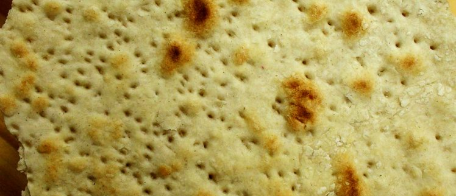
Сорок лет Израиль странствовал по пустыне. Что это было? Сорокалетнее наказание? Или благословение? Ответ помогает получить обращение к оригинальному тексту...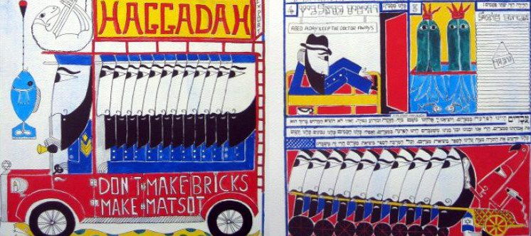
Современные художники трактуют ПАСХАЛЬНУЮ АГАДУ
Замечательный художник Пасхальной Агады — Элиягу Сиди. Его иллюстрации – сильнейшее средство выразить свое личное отношение к событиям трех тыс.летней давности, свою личную точку зрения и толкование на тексты Торы и традиции.
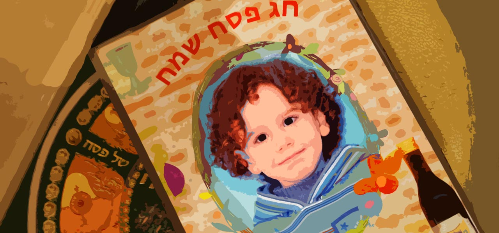
Седер ПЕСАХ ! ПЕРСОНАЛЬНАЯ АГАДА Ноаха
Маленький рассказ на седере нового репатрианта (оле хадаш) из Бразилии
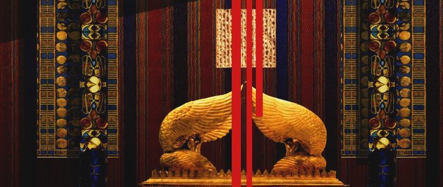
ПЕСАХ. Рождение творческой ВЕРЫ
Бог дал Своему народу творящую веру, веру, которая создает новую реальность. В событиях книги Исход Песах - время интенсивного действия Творца, когда вместе с Ним, израильтяне верой творили чудеса. Той самой верой, которой, по выражению апостола Павла они перешли море, как посуху. Это видео записано в Москве в 2009г. Музыкальная импровизация на гитаре: Виктор Сушко.
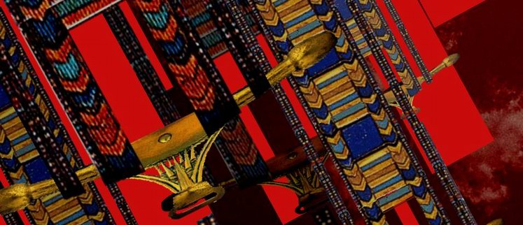
ПЕСАХ. Бог говорит в ПУСТЫНЕ
ПУСТЫНЯ - место, где говорит Бог. События книги Исход повествуют об этой драматической истории. Бог требует от фараона чрез Моисея, чтобы отпустил Его народ, дабы тот праздновал Ему в ПУСТЫНЕ. Он намерено призвал Свой народ в пустыню. На древнееврейском языке слова "пустыня" и "говорить" пишутся абсолютно одинаково и имеют один корень. То есть, из этимологии самого слова ПУСТЫНЯ на еврейском языке следует, то что это место, где ГОВОРИТ к тебе. Пророк Осия говорит об этом ясно (см. Ос.2:14). (длит.: 9:32 мин) Это видео записано в Москве в 2009г. Импровизация на гитаре: Виктор Сушко.
МАЦА — ПРЕСНЫЙ ХЛЕБ. Как сделать мацу. РЕЦЕПТ /+ видео/
Маца (ивр. מַצָּה; чаще мн. ч. ивр. מַצּוֹת, мацот. Буквальный перевод с иврита — «выжатый», «лишенный влаги»; в синодальном переводе — опресноки) — тонкие лепёшки из незаквашенного теста (в отличие от «квасного» хлеба, который мы едим все время кроме семи дней празднования Песаха, хамец). Тора называет мацу хлебом бедности.
 ИСХОД из Египта. Взгляд Джеймса ТИССО
ИСХОД из Египта. Взгляд Джеймса ТИССО
Галерея акварелей Джеймса Тиссо к книге "Исход". Я рад, что удалось раздобыть репродукции с хорошим разрешением. Малый формат его работ свидетельствует о том, что большая часть из них были сделаны, или начаты в полевых условиях Палестины, Сирии и Египта конца 19-го века.
Пресный ХЛЕБ, СОШЕДШИЙ С НЕБА
Одновременно с праздником Песах (синод. — Пасха) и тесно связанный с ним праздник Опресноков, название которого само по себе обнаруживает его кулинарную сущность. Бог говорит нам на протяжении всех семи дней этого праздника через самый распространенный вид еды — хлеб. И этот хлеб не есть уже просто пищевой продукт для поддержания физиологических процессов, но послание Всевышнего!
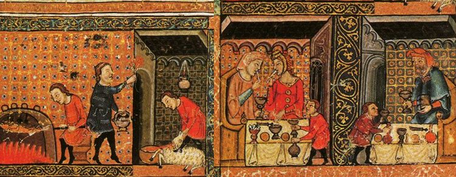
ПАСХАЛЬНАЯ АГАДА. Историческая справкаОсобое место, значение и устройство имеет Пасхальная Агада (старинное произношение Хаггада) (ивр. הַגָּדָה שֶׁל פֶּסַח, hаггада́ шель Пе́сах) — сборник молитв, благословений, комментариев к Торе и песен, прямо или косвенно связанных с темой Исхода из Египта и ритуалом праздника Песах. Чтение Пасхальной Аггады в ночь праздника Песах — обязательная часть седера.
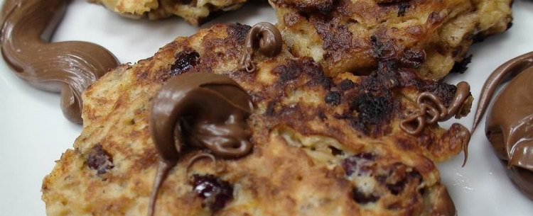
Песах. БЛЮДА ИЗ МАЦЫ от Миши Рубина
Питание мацой — это повеление от Господа Израилю во время праздника Песах. Из мацы можно приготовить богатый ассортимент блюд. Так что просто совершенно не справедливы утверждения о том, будто кошерная еда — не вкусная еда. Шеф Миша Рубин доказывает, что это не так!
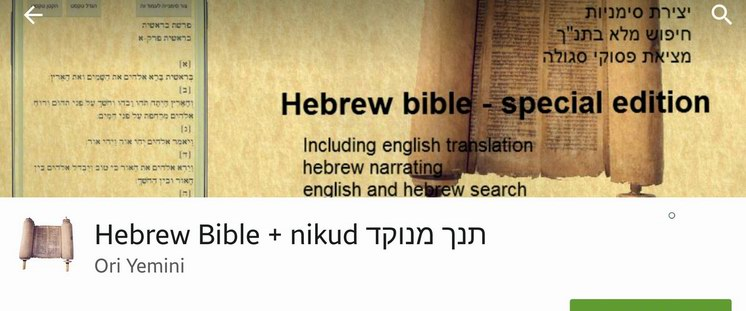
ТАНАХ для мобильника — подарок к ПесахуДля тех, кто изучает иврит Писания и сами Еврейские Писания на языке оригинала — хороший подарок к Песаху. ТАНАХ (т.н. Ветхий Завет).
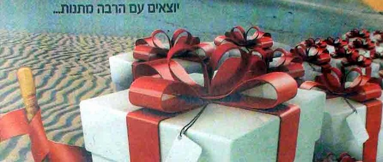
ПЕСАХ (Пасха) в израильской РЕКЛАМЕ
Уже не первый год, при просматривании израильских газет, я обращаю особенное внимание на рекламные объявления. Особенно в предпраздничных распродажах израильская реклама часто черпает вдохновение в еврейской традиции, обращаясь к образам и текстам Торы и Писания.
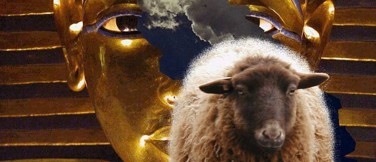
ОТПУСТИ МОЙ НАРОД! Песах. Исход
Это своего рода комикс Пасхальной Агады: 1. Стон. 2. Призыв Господа, слово, вышедшее из Его уст. 3. Песня влекущего Свою невесту жениха. 4. Кровь заветов: на косяках дверей еврейских домов еще в Египте, кровь священной жертвы и кровь Мессии, Который есть хлеб пресный, сошедший с Небес. В музыке израильского композитора Даниэля Круглова показана динамика отношений Бога со Своим народом.
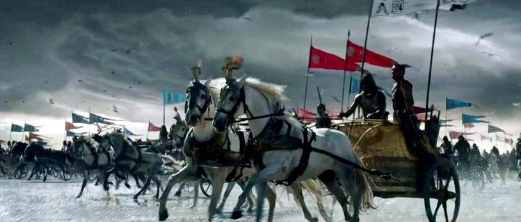
Исход, кот. чуть не запретили, или как Ридли Скотт евреев из Египта спасал
Конечно, для тех, кто внимательно читает Библию, фильм «Исход» далек от канона. Это не библейский фильм, снятый от «А» до «Я» по Писанию. Мы должны понимать, что перед нами личный взгляд режиссера Ридли Скотта.
Композитор Даниэль Круглов: музыкальная интерпретация недельного чтения Торы "ТРУМОТ" /кн.Исход/
ВИДЕО по теме "ПЕСАХ":
для просмотра видео, кликните на картинке
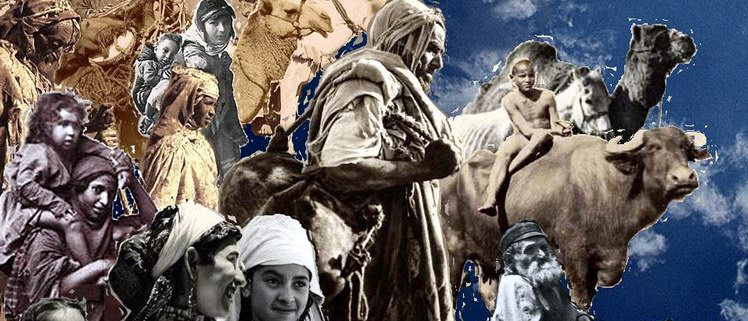
ИСХОД ИЗ ЕГИПТА. Песах
Видео комикс Пасхальной Агады. В музыке израильского композитора Даниэля Круглова показана динамика отношений Бога со Своим народом: 1. Стон. 2. Призыв Господа, слово, вышедшее из Его уст. 3. Песня влекущего Свою невесту жениха. 4. Кровь заветов: на косяках дверей еврейских домов еще в Египте, кровь священной жертвы и кровь Мессии, Который есть хлеб пресный, сошедший с Небес.
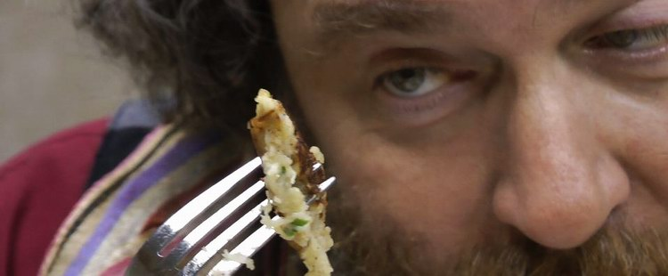
ЧТО ЕЛИ ОТЦЫ НАШИ в пустыне Синайской?
Песах. БЛЮДА ИЗ МАЦЫ от Миши Рубина. Из мацы можно приготовить богатый ассортимент блюд. Питание мацой - это повеление от Господа Израилю во время праздника Песах.
ПРЕСНЫЙ ХЛЕБ, СОШЕДШИЙ С НЕБА
видео ролик "ПРЕСНЫЙ ХЛЕБ, СОШЕДШИЙ С НЕБА" рассказывает об уникальном праздновании Песаха Израилем в пустыне во второй год по исходе из Египта. Тогда отцы наши пекли опресноки из хлеба, СОШЕДШЕГО С НЕБЕС - манна.
Сюжет показывает также как в наши дни израильтяне в домашних условиях делают мацу (опресноки). Ролик содержит также интересный рассказ израильтянина Миши Рубина о полукриминальной истории из его детства, повествующей о подпольном производстве мацы в бывшем Советском Союзе. (длительность: 12:31 мин).
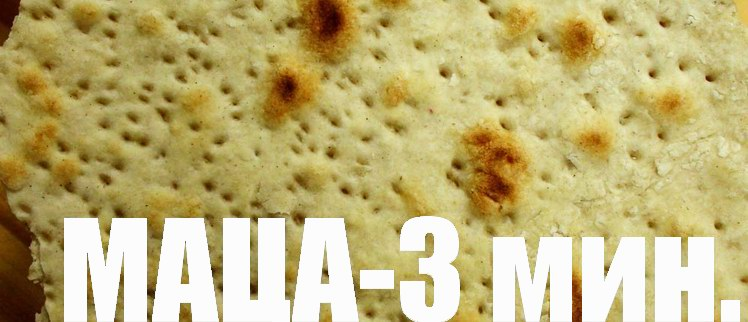
Если у вас много предпраздничных хлопот и нет времени смотреть длинные ролики, а испечь кашерную мацу собственными руками так, как это делают в Израиле хочется, - вот вам ролик, сокращенный вариант предыдущего, длительность: 3:00 мин. В нем нет бла-бла-бла. Есть только "ШАЛОМ" и собственно процесс изготовления. Подробную рецептуру и технологию выпечки мацы смотрите в описании под видео, либо читайте здесь